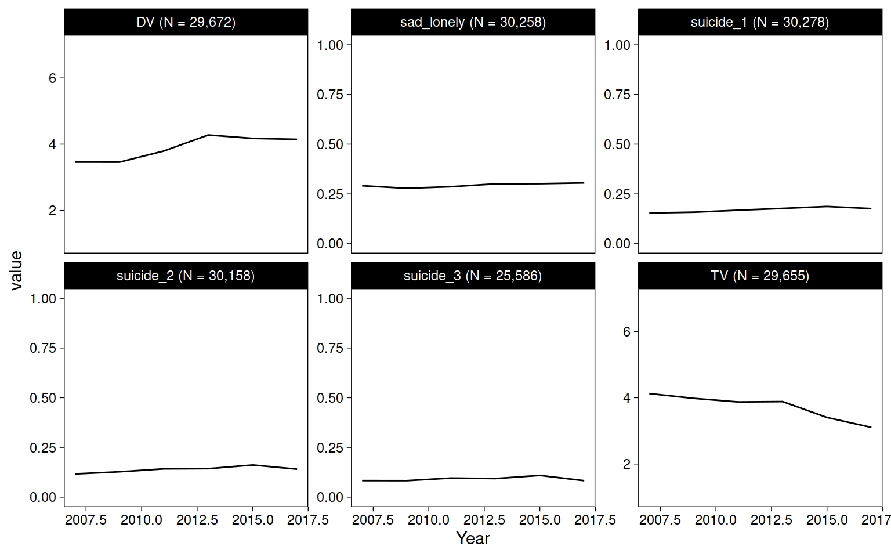

Chapter 5 Data descriptives
5.1 Data
5.1.1 Sample sizes and years
Sample sizes per dataset are the number of rows that include the outcome variable (there are two for US). The total sample size in the entire manuscript is the sum without US-emotion (including both US outcomes would duplicate its N).
tibble(
mtf = drop_na(mtf, Depression) %>% nrow,
us_conduct = drop_na(us, Conduct) %>% nrow,
us_emotion = drop_na(us, Emotion) %>% nrow,
yrbs = drop_na(yrbs, Suicide) %>% nrow
) %>%
mutate(total = mtf + us_conduct + yrbs) %>%
mutate(across(.fns = ~comma(.))) %>%
kable()| mtf | us_conduct | us_emotion | yrbs | total |
|---|---|---|---|---|
| 380,924 | 19,190 | 19,184 | 30,447 | 430,561 |
Actual sample sizes used in analyses are the intersections of non-missing values for the two variables (outcome, technology) used in each model.
doit <- function(data, name, x, y) {
data <- data %>%
drop_na(all_of(x), all_of(y))
data %>%
count(Sex) %>%
pivot_wider(names_from = Sex, values_from = n) %>%
mutate(Total = Female + Male) %>%
mutate(
across(
c(Female, Male),
~str_glue("{comma(.)} ({percent(./Total)})")
)
) %>%
mutate(across(where(is.numeric), ~comma(.))) %>%
mutate(Years = paste(range(data$Year), collapse = " - ")) %>%
mutate(Dataset = name, Technology = x, Outcome = y) %>%
select(Dataset, Technology, Outcome, Years, Total, Female, Male)
}
bind_rows(
doit(mtf, "MTF", "TV", "Depression"),
doit(mtf, "MTF", "SM", "Depression"),
doit(us, "US", "TV", "Emotion"),
doit(us, "US", "SM", "Emotion"),
doit(us, "US", "TV", "Conduct"),
doit(us, "US", "SM", "Conduct"),
doit(yrbs, "YRBS", "TV", "Suicide"),
doit(yrbs, "YRBS", "DV", "Suicide")
) %>%
arrange(Dataset, Technology, Outcome) %>%
kable()| Dataset | Technology | Outcome | Years | Total | Female | Male |
|---|---|---|---|---|---|---|
| MTF | SM | Depression | 2012 - 2017 | 78,357 | 40,172 (51%) | 38,185 (49%) |
| MTF | TV | Depression | 1991 - 2017 | 367,444 | 191,859 (52%) | 175,585 (48%) |
| US | SM | Conduct | 2009 - 2017 | 18,815 | 9,434 (50%) | 9,381 (50%) |
| US | SM | Emotion | 2009 - 2017 | 18,811 | 9,432 (50%) | 9,379 (50%) |
| US | TV | Conduct | 2009 - 2017 | 19,079 | 9,554 (50%) | 9,525 (50%) |
| US | TV | Emotion | 2009 - 2017 | 19,074 | 9,552 (50%) | 9,522 (50%) |
| YRBS | DV | Suicide | 2007 - 2017 | 29,450 | 15,424 (52%) | 14,026 (48%) |
| YRBS | TV | Suicide | 2007 - 2017 | 29,433 | 15,422 (52%) | 14,011 (48%) |
5.1.2 Outcomes
##
## Reliability analysis
## raw_alpha std.alpha G6(smc) average_r S/N ase mean sd median_r
## 0.85 0.85 0.84 0.48 5.5 0.00039 2 0.95 0.44## D_B_1 D_B_2 D_B_3 D_B_4 D_B_5 D_B_6
## D_B_1 1.00 0.60 0.48 0.34 0.56 0.34
## D_B_2 0.60 1.00 0.57 0.43 0.63 0.45
## D_B_3 0.48 0.57 1.00 0.39 0.59 0.39
## D_B_4 0.34 0.43 0.39 1.00 0.38 0.64
## D_B_5 0.56 0.63 0.59 0.38 1.00 0.40
## D_B_6 0.34 0.45 0.39 0.64 0.40 1.00sdq_con <- c("sdqe", "sdqg", "sdql", "sdqr", "sdqv")
sdq_emo <- c("sdqc", "sdqh", "sdqm", "sdqp", "sdqx")
us %>%
select(all_of(sdq_con)) %>%
psych::alpha() %>%
summary##
## Reliability analysis
## raw_alpha std.alpha G6(smc) average_r S/N ase mean sd median_r
## 0.62 0.62 0.58 0.25 1.6 0.0041 1.4 0.36 0.24##
## Reliability analysis
## raw_alpha std.alpha G6(smc) average_r S/N ase mean sd median_r
## 0.69 0.69 0.65 0.31 2.2 0.0035 1.6 0.45 0.29## sdqe sdqg sdql sdqr sdqv
## sdqe 1.00 0.30 0.34 0.34 0.16
## sdqg 0.30 1.00 0.23 0.24 0.15
## sdql 0.34 0.23 1.00 0.28 0.21
## sdqr 0.34 0.24 0.28 1.00 0.23
## sdqv 0.16 0.15 0.21 0.23 1.00## sdqc sdqh sdqm sdqp sdqx
## sdqc 1.00 0.26 0.28 0.19 0.21
## sdqh 0.26 1.00 0.42 0.39 0.39
## sdqm 0.28 0.42 1.00 0.29 0.30
## sdqp 0.19 0.39 0.29 1.00 0.37
## sdqx 0.21 0.39 0.30 0.37 1.005.2 Figures
mtf %>%
pivot_longer(c(TV, SM, Depression)) %>%
drop_na(value) %>%
add_count(name) %>%
mutate(name = str_glue("{name} (N = {comma(n)})")) %>%
ggplot(aes(Year, value)) +
geom_blank() +
stat_summary(fun=mean, geom="line") +
facet_wrap("name", scales = "free_y")
us %>%
pivot_longer(c(SM, TV, Emotion, Conduct)) %>%
drop_na(value) %>%
add_count(name) %>%
mutate(name = str_glue("{name} (N = {comma(n, accuracy = 1)})")) %>%
ggplot(aes(Year, value)) +
geom_blank() +
stat_summary(fun=mean, geom="line") +
facet_wrap("name", scales = "free_y")
yrbs %>%
pivot_longer(c(TV, DV, sad_lonely:suicide_3)) %>%
drop_na(value) %>%
add_count(name) %>%
mutate(name = str_glue("{name} (N = {comma(n)})")) %>%
ggplot(aes(Year, value)) +
geom_blank() +
stat_summary(fun=mean, geom="line") +
facet_wrap("name", scales = "free_y")